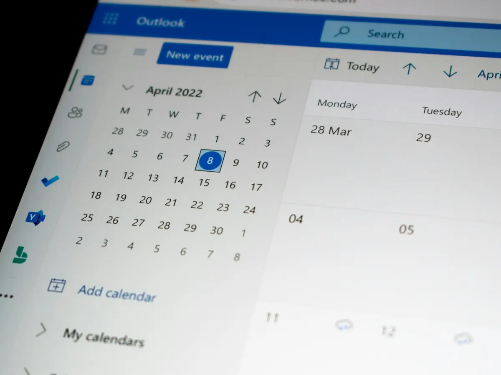

Messagerie professionnelle
Adresses @votre-entreprise.fr, boîtes partagées (contact@, compta@…), signatures harmonisées.
Une adresse e-mail à votre nom de domaine, des fichiers partagés accessibles partout, des réunions en visio en un clic : nous installons Microsoft 365 ou Google Workspace, migrons vos données et gérons le tout au quotidien.
Les bons outils, correctement configurés dès le départ.
Adresses @votre-entreprise.fr, boîtes partagées (contact@, compta@…), signatures harmonisées.
Réunions en ligne, conversations d'équipe et appels, sur ordinateur comme sur smartphone.
Fichiers partagés par service, accessibles partout, avec des droits d'accès bien définis.
Création des comptes, licences ajustées au besoin réel, arrivées et départs gérés.
Double authentification, règles de partage, protection contre le phishing.
Gmail, Drive, Agenda et Meet pour les équipes qui préfèrent l'univers Google.

Changer de messagerie fait peur : peur de perdre des e-mails, peur d'une journée sans pouvoir travailler. Notre méthode évite les deux.
Les deux sont d'excellentes solutions. Le bon choix dépend surtout de vos habitudes de travail.
Oui. Vos adresses restent les mêmes : nous migrons les messages, contacts et calendriers vers Microsoft 365 ou Google Workspace, puis basculons le nom de domaine au bon moment.
Pour une petite structure, quelques jours de préparation suffisent, et la bascule elle-même se fait souvent un soir ou un week-end. Vos équipes retrouvent leurs e-mails le lendemain matin.
Microsoft 365 convient aux équipes qui utilisent Word, Excel et Outlook au quotidien. Google Workspace séduit par sa simplicité dans le navigateur. Nous vous aidons à choisir selon vos habitudes et vos logiciels métier.
Oui : création des comptes, attribution et ajustement des licences, réinitialisation des mots de passe, partages et droits d'accès. Vous n'avez plus à vous en occuper.
Nous activons la double authentification, réglons les partages et ajoutons une sauvegarde de vos e-mails et fichiers, car la corbeille ne conserve les éléments supprimés que pendant une durée limitée.
Retrouvez l'ensemble de notre offre sur la page infogérance et maintenance pour les PME.
Nous étudions votre organisation et vous proposons la solution la plus adaptée.